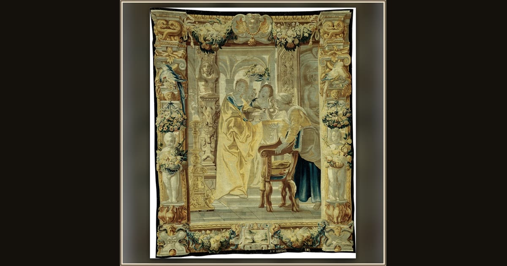

Four Servants, part of Telemachus Leading Theoclymenus to Penelope from The Story of Odysseus
After a design by Jacob Jordaens (1593–1678), Woven at the workshop of Jan van Leefdael (1603–1668), Brussels · c. 1650 · The Art Institute of Chicago · Chicago, USA
Woven in wool and silk, this hanging shows young Telemachus bringing a guest home to his mother Penelope, still waiting for Odysseus. Explore its place in Book XVII of the Odyssey.